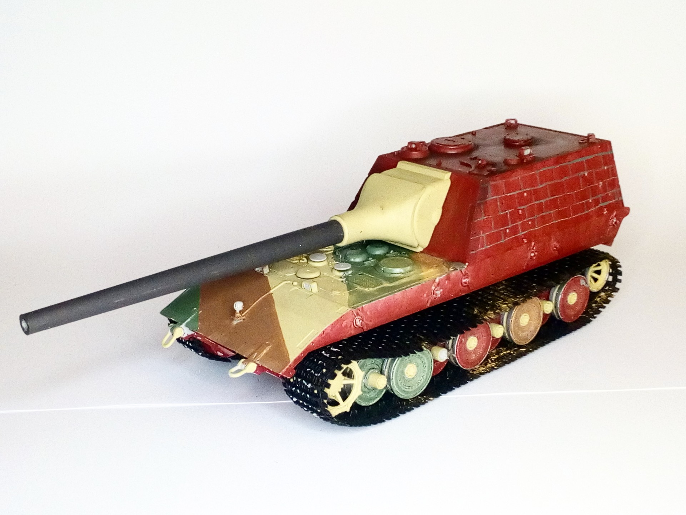

Mezzi militari · scale model archive
Stug E-100
Stug E-100 — Kit: Trumpeter, Scale: 1/35. Assault gun project with a huge gun, side camo attempring to resemble a brick wall #1/35 #Trumpeter

Photo gallery
English description
Assault gun project with a huge gun, side camo attempring to resemble a brick wall
#1/35 #Trumpeter
Descrizione italiana
Cannone d’assalto progetto con una enorme gun, side mimetica attempting una resemble una brick wall.